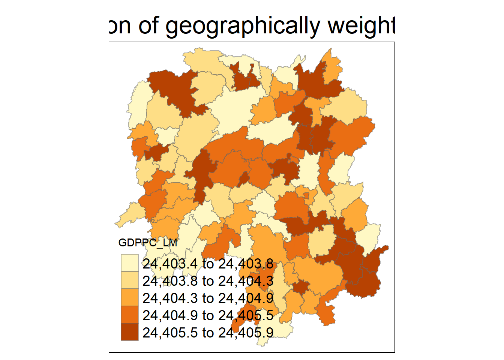

pacman::p_load(sf, raster, spatstat, sparr, tmap, tidyverse, stpp, skimr, GWmodel)In Class Exercise 5: Spatio-Temporal Point Patterns Analysis
1.0 Introduction
A spatio-temporal point process (also called space-time or spatial-temporal point process) is a random collection of points, where each point represents the time and location of an event. Examples of events include incidence of disease, sightings or births of a species, or the occurrences of fires, earthquakes, lightning strikes, tsunamis, or volcanic eruptions.
The analysis of spatio-temporal point patterns is becoming increasingly necessary, given the rapid emergence of geographically and temporally indexed data in a wide range of fields. Several spatio-temporal point patterns analysis methods have been introduced and implemented in R in the last ten years. This chapter shows how various R packages can be combined to run a set of spatio-temporal point pattern analyses in a guided and intuitive way. A real world forest fire events in Kepulauan Bangka Belitung, Indonesia from 1st January 2023 to 31st December 2023 is used to illustrate the methods, procedures and interpretations.
1.1 Research Questions
The specific question we would like to answer is:
are the locations of forest fire in Kepulauan Bangka Belitung spatial and spatio-temporally independent?
if the answer is NO, where and when the observed forest fire locations tend to cluster?
2.0 Setup and Requirements
For the purpose of this study, five R packages will be used. They are:
rgdalfor importing geospatial data in GIS file format such as shapefile into R and save them as Spatial*DataFrame,maptoolsfor converting Spatial* object into ppp object,rasterfor handling raster data in R,sparrprovides function to estimate fixed and adaptive kernel-smoothed spatial relative risk surfaces via the density-ratio method and perform subsequent inference. fixed-bandwidth spati=temporal density and relative risk estimation is also supportedspatstatfor performing Spatial Point Patterns Analysis such as kcross, Lcross, etc., andtmapfor producing cartographic quality thematic maps
Two data sets will be used in this hands-on exercise, they are:
Hunan county boundary layer. This is a geospatial data set in ESRI shapefile format.
Hunan_2012.csv: This csv file contains selected Hunan’s local development indicators in 2012.
hunan <- st_read(dsn = "data/geospatial", layer = "Hunan")hunan2012 <- read_csv("data/aspatial/Hunan_2012.csv")hunan <- left_join(hunan,hunan2012, by="County") %>%
select(1:3,7,9,16,31,32)write_rds(hunan, "data/rds/hunan_rds")3.0 Geographically weighted summary statistic with adaptive bandwidth
3.1 Determine adaptive bandwidth
bw_AIC <- bw.gwr(GDPPC ~ 1,
data = hunan_sp,
approach = "CV f",
adaptive = TRUE,
kernel = 'bisquare',
longlat = T
)Adaptive bandwidth: 62 CV score: 18372757104
Adaptive bandwidth: 46 CV score: 18580353939
Adaptive bandwidth: 72 CV score: 18261945072
Adaptive bandwidth: 78 CV score: 18284736555
Adaptive bandwidth: 68 CV score: 18289290196
Adaptive bandwidth: 74 CV score: 18279018755
Adaptive bandwidth: 70 CV score: 18279860873
Adaptive bandwidth: 72 CV score: 18261945072 bw_AIC <- bw.gwr(GDPPC ~ 1,
data = hunan_sp,
approach = "AIC",
adaptive = TRUE,
kernel = 'bisquare',
longlat = T
)Adaptive bandwidth (number of nearest neighbours): 62 AICc value: 1938.23
Adaptive bandwidth (number of nearest neighbours): 46 AICc value: 1939.809
Adaptive bandwidth (number of nearest neighbours): 72 AICc value: 1937.17
Adaptive bandwidth (number of nearest neighbours): 78 AICc value: 1937.175
Adaptive bandwidth (number of nearest neighbours): 68 AICc value: 1937.494
Adaptive bandwidth (number of nearest neighbours): 74 AICc value: 1937.232
Adaptive bandwidth (number of nearest neighbours): 70 AICc value: 1937.334
Adaptive bandwidth (number of nearest neighbours): 72 AICc value: 1937.17 3.2 Fixed Distance
bw_AIC <- bw.gwr(GDPPC ~ 1,
data = hunan_sp,
approach = "CV f",
adaptive = FALSE,
kernel = 'bisquare',
longlat = T
)Fixed bandwidth: 12310.25 CV score: 18273921746
Fixed bandwidth: 7609.674 CV score: 18103867978
Fixed bandwidth: 4704.558 CV score: 16845755087
Fixed bandwidth: 2909.098 CV score: Inf
Fixed bandwidth: 5814.214 CV score: 17412467531
Fixed bandwidth: 4018.754 CV score: 17199641530
Fixed bandwidth: 5128.409 CV score: 17049024078
Fixed bandwidth: 4442.604 CV score: 16843054303
Fixed bandwidth: 4280.708 CV score: 16938431975
Fixed bandwidth: 4542.662 CV score: 16824565479
Fixed bandwidth: 4604.501 CV score: 16826274857
Fixed bandwidth: 4504.443 CV score: 16828132125
Fixed bandwidth: 4566.282 CV score: 16824224135
Fixed bandwidth: 4580.881 CV score: 16824638274
Fixed bandwidth: 4557.26 CV score: 16824204920
Fixed bandwidth: 4551.684 CV score: 16824284931
Fixed bandwidth: 4560.706 CV score: 16824190674
Fixed bandwidth: 4562.836 CV score: 16824195234
Fixed bandwidth: 4559.39 CV score: 16824192954
Fixed bandwidth: 4561.52 CV score: 16824191213
Fixed bandwidth: 4560.204 CV score: 16824191084
Fixed bandwidth: 4561.017 CV score: 16824190704
Fixed bandwidth: 4560.514 CV score: 16824190763
Fixed bandwidth: 4560.825 CV score: 16824190660
Fixed bandwidth: 4560.898 CV score: 16824190667
Fixed bandwidth: 4560.78 CV score: 16824190661
Fixed bandwidth: 4560.853 CV score: 16824190661
Fixed bandwidth: 4560.808 CV score: 16824190660
Fixed bandwidth: 4560.836 CV score: 16824190660
Fixed bandwidth: 4560.818 CV score: 16824190660
Fixed bandwidth: 4560.814 CV score: 16824190660
Fixed bandwidth: 4560.821 CV score: 16824190660
Fixed bandwidth: 4560.817 CV score: 16824190660
Fixed bandwidth: 4560.819 CV score: 16824190660
Fixed bandwidth: 4560.818 CV score: 16824190660
Fixed bandwidth: 4560.817 CV score: 16824190660
Fixed bandwidth: 4560.818 CV score: 16824190660 Computing Geographically weighted summary statistics
gwstat <- gwss(data = hunan_sp,
vars = "GDPPC",
bw = bw_AIC,
kernel = "bisquare",
adaptive = TRUE,
longlat = T
)Preparing the output data.
gwstat_df <- as.data.frame(gwstat$SDF)hunan_gstat <- cbind(hunan_sf, gwstat_df)The Geographically Weighted Mean
tm_shape(hunan_gstat) +
tm_fill("GDPPC_LM",
n = 5,
style = "quantile") +
tm_borders(alpha = 0.5) +
tm_layout(main.title = "Dsitribution of geographically weighted mean",
main.title.position = "center",
main.title.size = 2.0,
legend.text.size = 1.2,
legend.height = 1.50,
legend.width = 1.50,
frame = TRUE)